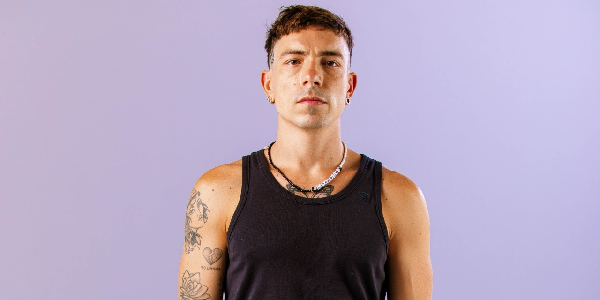
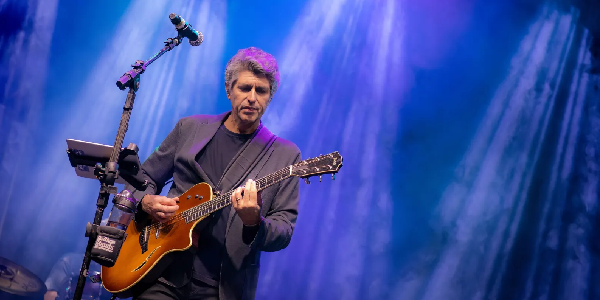
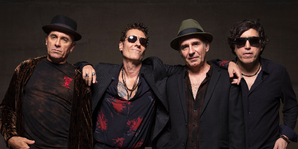
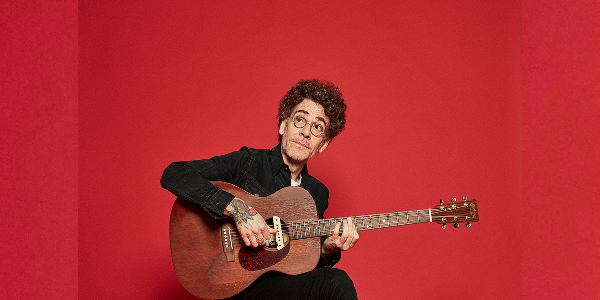

Notícias Nacionais
Grammy Latino 2024: artistas brasileiros dominam indicações
 Essas são as 10 músicas pop/rock nacionais mais tocadas no Brasil
 Primeiro single do EP de Leoni, “Quem Nos Dera” traz dueto com Zélia Duncan
 Capital Inicial anuncia turnê comemorativa do álbum “Acústico MTV”
Jão anuncia turnê especial de Natal; veja datas e cidades
 Nando Reis , sobre luta contra o vício: ‘Minha vida era ruim’